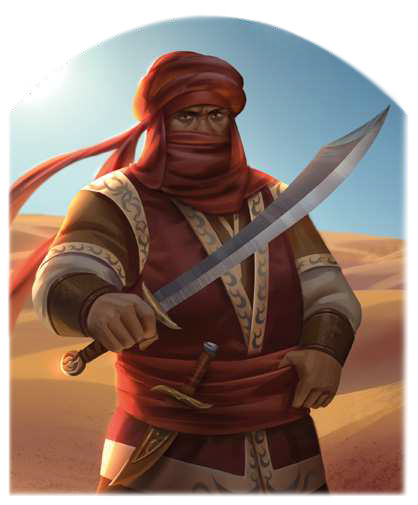

"Bei Rastullahs ewiger Bartpracht! Du brauchst diese ganzen Waren nicht. Sie behindern dich nur, wenn du in der Wüste überleben willst. Und das willst du doch, oder? Also überlasse sie Ali, Ali und Ali. Dann kannst du unbehelligt weiterziehen - und du wirst leben, wenn der Unergründliche es so gefügt hat."
Baba ist mehr als ein einfacher Wegelagerer, der die Randgebiete der Wüste Khom und die Tulamidenlande heimsucht. Seine Bande umfasst angeblich stolze 33 Räuber, die sich allesamt Ali nennen und ihm blind gehorchen. Stimmen Gerüchte aus dem Kalifat, so ist seine Truppe für mindestens jeden zweiten Überfall verantwortlich, der zwischen dem Wal-el-Khômchra und dem Cichanebi-Salzsee in den letzten fünf Jahren stattgefunden hat. Viele der novadischen Wüstenbewohner glauben, Baba sei der verstoßene Sohn eines Sultans, der in der Wüste nach seiner Bestimmung sucht. Die Wesire des Kalifen hingegen halten ihn für einen gefährlichen Umstürzler, seit er immer wieder ihren Häschern entwischt ist, und er Baba hat tatsächlich mindestens einen Emir auf dem Gewissen. Er versorgt jedoch viele Stämme der Khôm mit Lebensmitteln, Gewürzen und Wasser, sodass er dort stets Rückhalt indet. Ein festes Lager scheint die Bande nicht zu haben, stattdessen zieht Baba mit seinen Männern wie ein echter Novadi von Oase zu Oase.
Volkes Stimme
- "Das wäre ein Kalif, sag ich dir! Kein festes Dach, sondern nur die Plane eines Zeltes, und der Wind der Wüste. Ganz so, wie Rastullah es uns offenbart hat!"
- "Bist du irre? Ich führe meine Karawane ganz sicher nicht dorthin, da lauern die 33 Räuber auf mich und mit Baba der Schlimmste von ihnen.
Nein, das lasse ich lieber gleich bleiben, denn ich will mir nicht den Hals aufschlitzen lassen."